Primeira sala
Greybox navegável, organizado e iluminado, ainda sem programação.
1.3 → 1.4
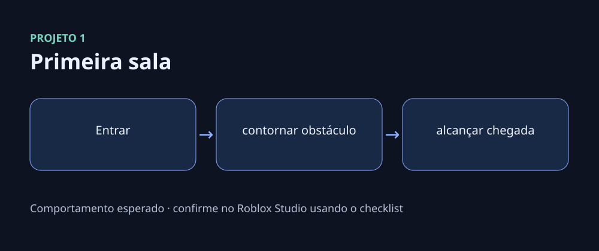
Tente primeiro no arquivo de início. Abra a solução somente depois de registrar sua hipótese e use os erros intencionais como laboratório de diagnóstico.
Greybox navegável, organizado e iluminado, ainda sem programação.
1.3 → 1.4

Uma porta reage a evento com estado e debounce observáveis.
2.1 → 3.1
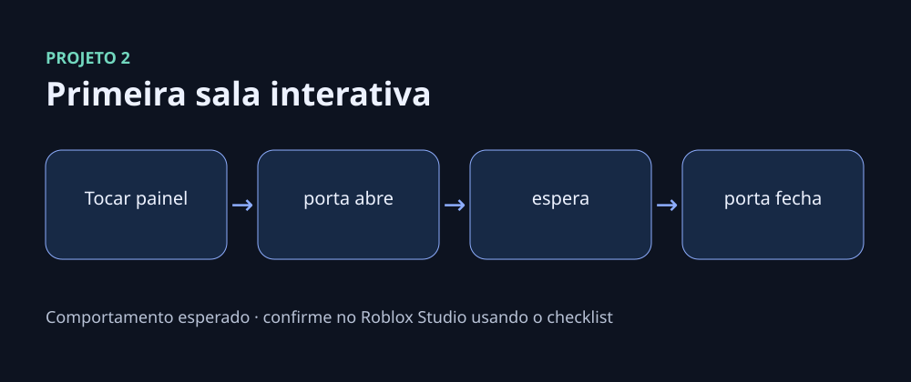
Obstáculo temporário com dano e estado independente por jogador.
3.1 → 4.1
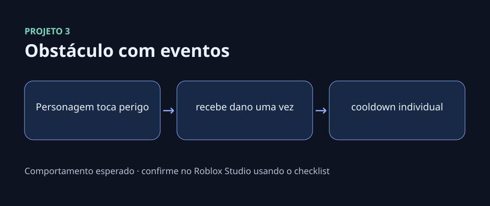
Lanterna utilizável em teclado, gamepad e touch com estado local acessível.
4.3 → 4.6
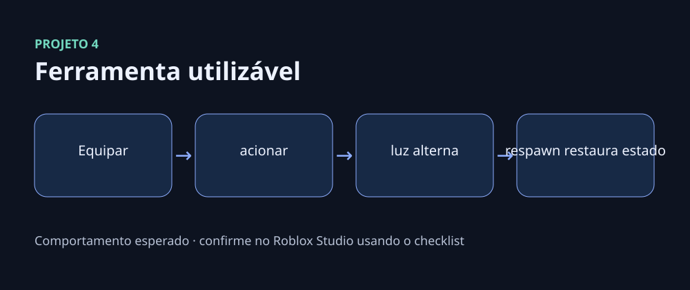
Checkpoint de sessão restaurado no respawn e mostrado em HUD responsivo.
4.1 → 4.6
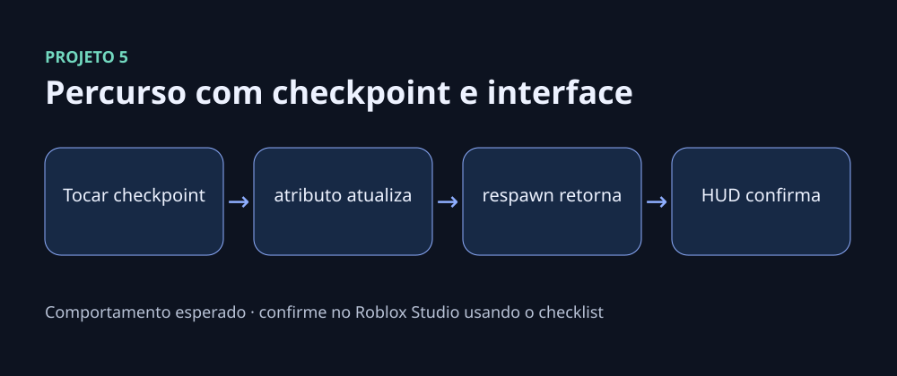
Coleta com autoridade do servidor, distância, frequência e recompensa definida no catálogo.
3.2 → 5.4
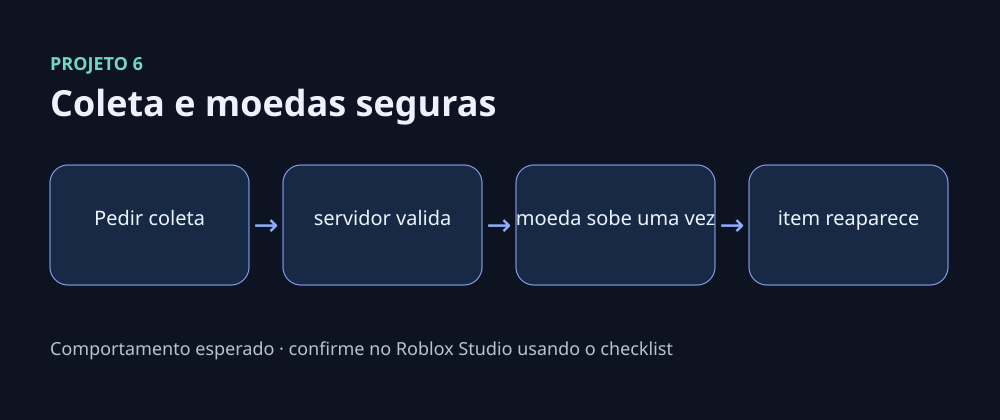
Catálogo no servidor, transação idempotente e responsabilidades modulares.
5.5 → 6.3
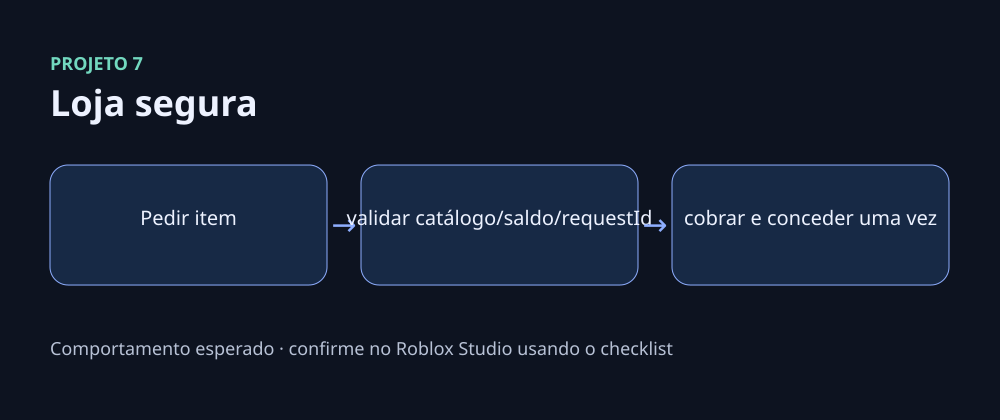
Perfil versionado com migração, load seguro e UpdateAsync protegido por pcall.
7.1 → 7.3
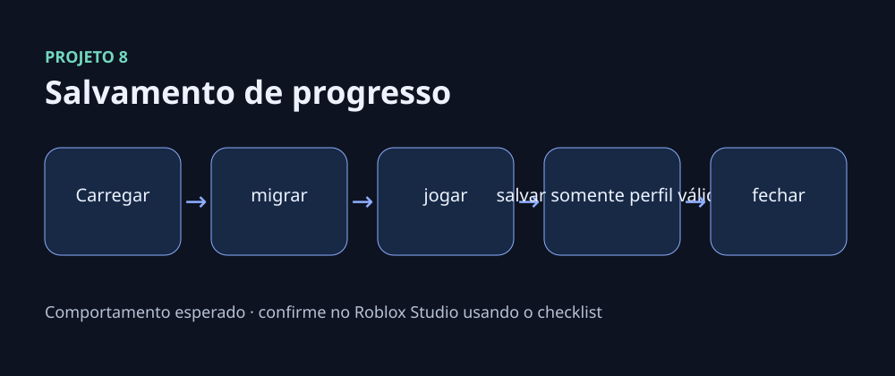
Vertical slice autoritativa de mineração, venda, upgrade, área e missão.
7.4 → 7.5
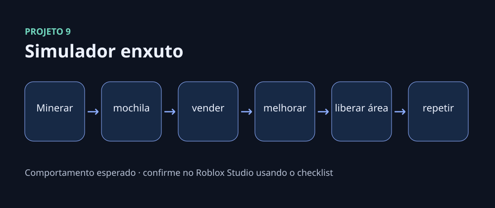
Arena com feedback local e dano confirmado no servidor por raycast e estado.
8.3 → 8.5
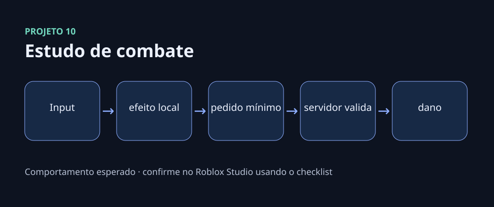
Projeto final com rodada curta, coleta segura, progressão, acessibilidade e operação.
11.1 → 11.4
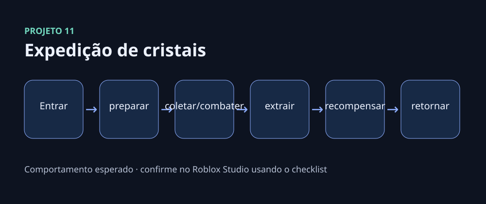